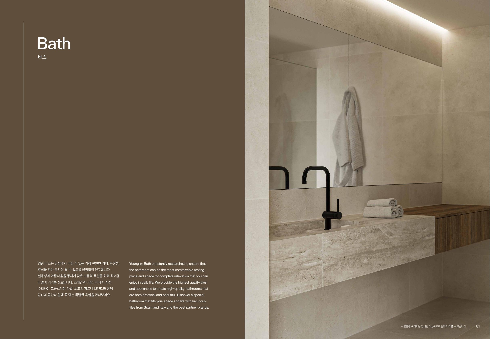
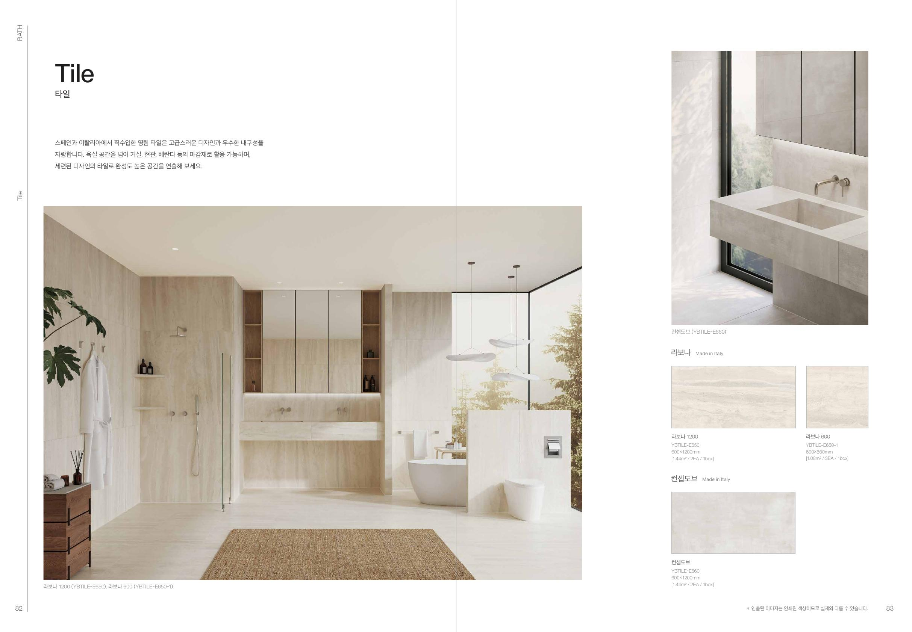
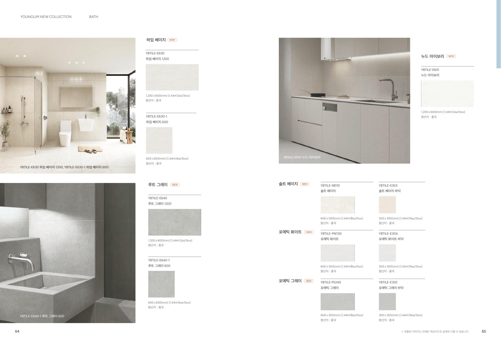
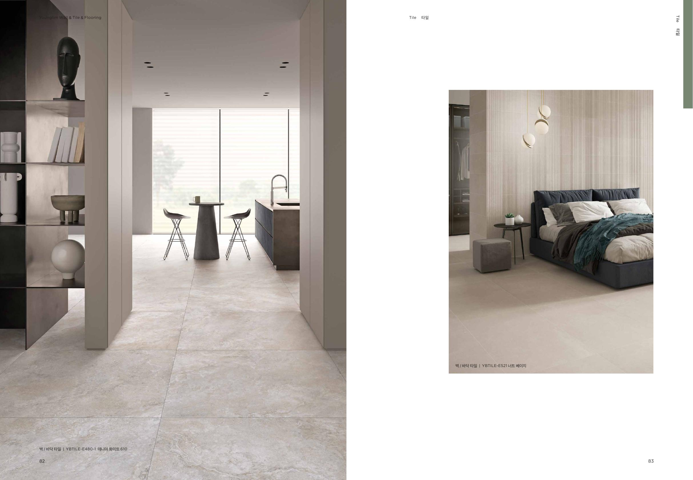

현관
흙먼지·스크래치·오염이 눈에 덜 띄는 표면

먼저 기준부터
샘플이 예쁜 것과 실제 생활에서 편한 것은 다를 수 있습니다. 공간한쪽은 색상보다 오염, 세척, 미끄럼, 배수와 시공 조건을 먼저 확인합니다.
흙먼지·스크래치·오염이 눈에 덜 띄는 표면
기름때 세척과 줄눈 관리가 쉬운 표면
젖은 바닥의 미끄럼과 배수 구배를 우선
2025년의 라보나·시에나·캐니언 아이보리가 자연석의 색과 결을 안정적으로 보여줬다면, 2026년에는 표면의 입체감과 재료의 존재감이 더 선명해집니다.
조개껍질과 퇴적층을 연상시키는 불규칙한 결. 넓은 벽 한 면에 사용하면 부드러운 포인트가 됩니다.
추천 · 욕실 벽 / 세면대 배경 / 건식 포인트 벽웜 베이지 바탕에 흐르는 섬세한 베인. 대리석보다 따뜻하고 차분한 고급감을 만드는 방향입니다.
추천 · 주방 벽 / 대형 아트월 / 호텔형 욕실반복되는 세로 골과 빛의 음영이 핵심입니다. 물때가 닿는 면보다 관리 가능한 포인트 구간에 적합합니다.
추천 · 젠다이 전면 / 건식 세면대 벽 / 니치공간한쪽의 적용 원칙
기본 타일 80% + 질감 타일 20%. 젠다이 전면이나 니치처럼 작은 면만 강조합니다.
세면대 또는 샤워 벽 한 면을 포인트로 잡고 나머지는 잔잔한 무광 타일로 정리합니다.
대형 베인이나 강한 리브드 패턴을 넓게 사용합니다. 재단 위치와 조명 계획까지 함께 설계해야 합니다.
리브드처럼 요철이 강한 제품은 샤워기 바로 옆이나 기름이 튀는 조리대 벽보다, 손이 덜 닿고 청소 가능한 건식 포인트 면에 우선 제안합니다.
줄눈은 줄지만 운반과 재단, 바탕 평활도, 배수 구배의 난도가 함께 올라갑니다. 욕실 크기와 배수구 위치를 먼저 보고 규격을 정합니다.
재단과 배치가 비교적 유연하고 작은 욕실에도 적용하기 쉽습니다. 대신 줄눈 선이 많이 보여 타일과 매지 색의 조합이 중요합니다.
예산·보수성 우선 / 작은 욕실줄눈을 줄이며 정돈된 인상을 만듭니다. 바닥 적용 시 구배와 배수구 주변 재단 계획을 먼저 확인해야 합니다.
디자인·비용 균형 / 벽 또는 조건부 바닥면이 넓어 보이지만 좁은 욕실에서는 자투리와 재단이 늘 수 있습니다. 양중과 시공 인건비도 함께 비교합니다.
넓은 벽 / 전문가 시공 권장베인과 스톤 무늬를 크게 연결하기 좋습니다. 모서리·타공·운반 위험과 전문 접착 시공까지 견적에 포함합니다.
고강도 컨셉 / 전문가 시공
DETAIL DECIDES QUALITY
외관이 비슷해도 사용 부위가 다를 수 있습니다. 바닥은 제조사가 표시한 바닥 사용 가능 여부와 미끄럼 성능을 확인합니다.
타일 두 장의 모서리를 약 45도로 가공해 맞대는 방식입니다. 별도 마감재 없이 깔끔하지만 파손 위험과 가공 시간이 커 숙련 시공이 필요합니다.
타일과 비슷한 색은 면을 차분하게 연결하고, 대비색은 격자와 작은 시공 오차까지 강조합니다. 샘플을 나란히 놓고 결정합니다.
유광은 빛을 반사해 밝아 보이지만 물자국이 도드라질 수 있습니다. 무광이라고 모두 미끄럽지 않은 것은 아니므로 성능표를 별도로 봅니다.
배수 구배와 곡면 대응은 유리하지만 줄눈이 많아 청소 범위가 늘어납니다. 포인트 면이나 바닥 일부에 제한적으로 사용합니다.
기존 타일 철거 범위, 양중과 반출 조건
평활도 보정, 누수 보수와 방수 범위
규격별 양중 인원, 파손 로스와 타공 수
졸리컷 또는 코너비드의 길이와 개소
타일 크기, 무늬 맞춤과 현장 난이도
견적서에는 타일 규격·㎡ 수량·로스율·접착제·줄눈·방수·졸리컷 길이·타공 개수·폐기물을 나눠 적어야 비교가 가능합니다.

너무 밝고 매끈한 면은 흙먼지와 물자국이 쉽게 보일 수 있습니다. 중간 명도와 잔잔한 패턴은 일상 관리 부담을 낮추는 현실적인 선택입니다.

조리대 벽은 기름과 양념이 반복해서 튑니다. 요철이 강하거나 줄눈이 많으면 관리가 어려워질 수 있어, 표면과 타일 크기를 함께 비교해야 합니다.
큰 타일은 줄눈이 적고 넓어 보이지만 작은 욕실 바닥에서는 구배 형성과 재단 난도가 높아집니다. 벽과 바닥을 같은 기준으로 고르지 않습니다.
600각 포세린, 조건부 추천
추천: 넓고 평활한 건식 공간 · 조건부: 현관, 주방 벽 · 전문가 권장: 욕실 바닥과 대형 타일
벽용·바닥용과 습식 공간 사용 가능 여부
무광·유광·요철과 실제 청소 난이도
실측과 배치에 따른 재단·로스 수량
색상, 폭, 오염과 보수 가능성
생산 차수에 따른 색상·무늬 편차
들뜸·균열·누수와 덧방 가능 여부 확인
중심선과 재단 위치, 무늬 방향 결정
평활도 보정, 습식 공간 방수와 구배
제품과 바탕에 맞는 접착제 및 단차 관리
충분히 굳힌 뒤 줄눈과 실리콘 마감
샘플 비교, 실측 기록, 제품·줄눈 색 선택, 여유 수량 계산
난이도 2 / 5고객이 제품을 선택·구매하고 철거와 시공은 공정별 전문가에게 의뢰
난이도 3 / 5욕실 방수·바닥 구배, 대형 타일, 기존 타일 철거, 복잡한 타공과 모서리
난이도 5 / 5PRODUCT SOURCE
페이지의 제품명과 품번은 영림 공식 자료를 기준으로 정리했습니다. 단종·재고·규격·사용 가능 부위는 구매 전 최신 카탈로그와 판매처에서 다시 확인하세요.
영림 공식 제품 확인 ↗